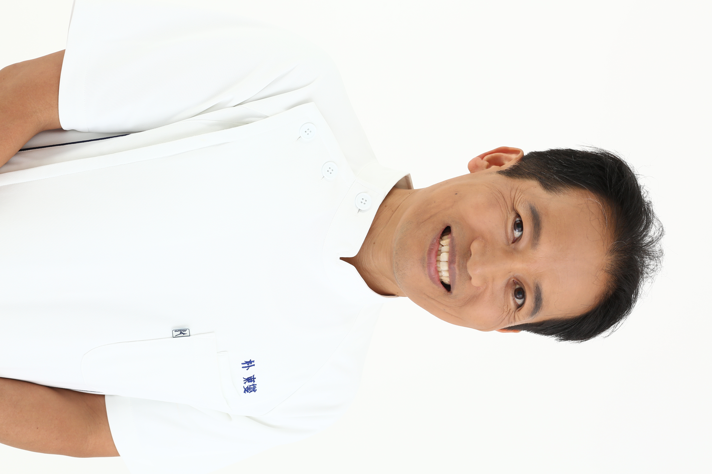

ご予約受付中
Tel. 0120-911-359
受付時間:9:00～20:00/当日予約OK
(24時間受付)

思えば小さいとき、父の肩を叩いてあげると、とても喜んでくれたことが、治療や施術と言うものに興味を持つきっかけでした。
来日し、何の仕事をしようかと考えたときに浮かんだのが、子供のころ父に喜んでもらった「施術をする」という仕事でした。
そんなさなか、自分の意識を変えた出来事がありました。
元気だった父が突然食道癌になり、入院していた父の肩や足を揉むくらいの事しかできない自分の無力さを深く感じました。
このショックな出来事により、今までの癒しをメインにした施術のままでいいのかと自問させられました。
そして、予防と治療ができる療法を探し、出会ったのが日本古来のお腹に着眼した療法でした。
食事の偏り、睡眠不足、運動しない、しすぎ、過度なストレス、休養時間不足、生物や冷たい飲み物による冷え症など、様々症状で悩んでいる方々に、ちょっとしたアドバイスと手技で、症状の改善のお手伝いをできたらと思います。
院長 朴 東燮